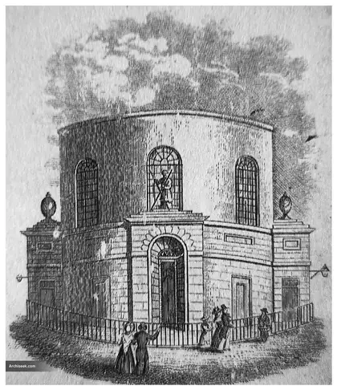

Back to Stop 18: Palace Street
Meander · off Stop 18, Palace Street
St Andrew’s and Grafton Street
A church that began in the fields by the Poddle, and a street closed for a river it never touched.
St Andrew’s
St Andrew’s church first stood in the fields near the Poddle, outside the walls; one writer imagines a pilgrim crossing a wooden bridge over the river on the way to it from St Mary del Dam. In 1670 it moved to St Andrew Street, to a site that had been a bowling green called Tib and Tom. The round church built there in 1793 to 1807 to designs by Francis Johnston burned in 1860, and Lanyon, Lynn and Lanyon’s church replaced it in 1862. The parish was one of those that paid the Poddle Tax in 1829.
Grafton Street
The Poddle never ran under Grafton Street; the Stein, another of Dublin’s hidden rivers, runs nearby. Even so, from 24 January 1988 the stretch between Chatham Street and South Anne Street was closed to traffic for about three weeks “to facilitate culverting of the Poddle River at Kimmage”, a notice that is still a puzzle.
Pictures from the archive


Pictures gathered by the Crumlin and Walkinstown History Group for their Poddle research, shown here in black and white. If you know more about any of them, or hold the rights to one, please get in touch.
Parts of this page draw on research by the volunteers of the Crumlin and Walkinstown History Group, shared with poddle.ie. About their research.